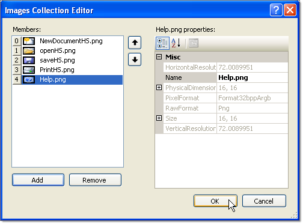
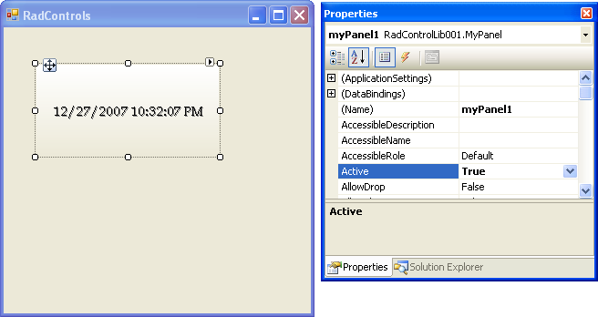

Getting Started
The following tutorial demonstrates:
Using primitives to build a custom panel element.
Using the custom panel element to build a custom RadControl.
Using dependency properties.
The example control will contain a filled area and a centered text primitive. A timer will update the text to reflect the current date and time.
Create the Element Class
In Visual Studio, create a new Windows Controls Library. In this example the library will be named "RadControlLib001".
Add references to Telerik.WinControls.UI.dll, TelerikCommon.dll and Telerik.WinControls.dll
Delete the UserControl1, since we will not need it
In the controls library add a new class "MyPanelElement.cs".
Replace the MyPanelElement.cs code with the code below.
Notice in the code below:
MyPanelElement descends from RadItem so that it can be used in the designer.
In the CreateChildElements() method the Class property of each primitive is assigned. This allows Telerik Presentation Foundation to apply themes to specific parts of the control.
In the CreateChildElements() method the TextPrimitive Text property is bound to the CurrentTimeProperty.
A standard CLR style property is defined for CurrentTime that wraps the Dependency property.The effect of this configuration of properties is that when the CurrentTime property is changed, either by a timer or elsewhere in the code, the dependency property CurrentTimeProperty value changes, the bound TextPrimitive Text property is assigned the CurrentTimeProperty value and the display updates to show the new time.
[C#] Creating MyPanelElement
public class MyPanelElement : RadElement
{
TextPrimitive text;
FillPrimitive background;
Timer updateTime;
protected override void CreateChildElements()
{
base.CreateChildElements();
this.text = new TextPrimitive();
this.text.ZIndex = 2;
this.text.Margin = new Padding(39, 45, 0, 0);
this.text.BindProperty(TextPrimitive.TextProperty, this,
MyPanelElement.CurrentTimeProperty, PropertyBindingOptions.OneWay);
this.background = new FillPrimitive();
this.background.GradientStyle = GradientStyles.OfficeGlass;
this.Children.Add(this.text);
this.Children.Add(this.background);
updateTime = new Timer();
updateTime.Interval = 100;
updateTime.Tick += new EventHandler(updateTime_Tick);
updateTime.Start();
}
bool active = true;
public bool Active
{
get { return active; }
set
{
active = value;
if (!value)
{
this.updateTime.Stop();
}
else
{
this.updateTime.Start();
}
}
}
void updateTime_Tick(object sender, EventArgs e)
{
this.SetValue(CurrentTimeProperty, DateTime.Now.ToString());
}
public static RadProperty CurrentTimeProperty =
RadProperty.Register("CurrentTimeProperty", typeof(string), typeof(MyPanelElement),
new RadElementPropertyMetadata(null, ElementPropertyOptions.AffectsDisplay));
public string CurrentTime
{
get { return (string)this.GetValue(CurrentTimeProperty); }
set { this.SetValue(CurrentTimeProperty, value); }
}
}
[VB.NET] Creating MyPanelElement
Public Class MyPanelElement
Inherits RadItem
Private text_ As TextPrimitive
Private background As FillPrimitive
Private updateTime As Timer
Protected Overloads Overrides Sub CreateChildElements()
MyBase.CreateChildElements()
Me.text_ = New TextPrimitive()
Me.text_.ZIndex = 2
Me.text_.Margin = New Padding(39, 45, 0, 0)
Me.text_.BindProperty(TextPrimitive.TextProperty, Me, MyPanelElement.CurrentTimeProperty, PropertyBindingOptions.OneWay)
Me.background = New FillPrimitive()
Me.background.GradientStyle = GradientStyles.OfficeGlass
Me.Children.Add(Me.text_)
Me.Children.Add(Me.background)
updateTime = New Timer()
updateTime.Interval = 100
AddHandler updateTime.Tick, AddressOf updateTime_Tick
updateTime.Start()
End Sub
Private active As Boolean = True
Public Property ActiveProp() As Boolean
Get
Return active
End Get
Set(ByVal value As Boolean)
active = value
If Not value Then
Me.updateTime.[Stop]()
Else
Me.updateTime.Start()
End If
End Set
End Property
Sub updateTime_Tick(ByVal sender As Object, ByVal e As EventArgs)
Me.SetValue(CurrentTimeProperty, DateTime.Now.ToString())
End Sub
Public Shared CurrentTimeProperty As RadProperty = RadProperty.Register("CurrentTimeProperty", GetType(String), GetType(MyPanelElement), New RadElementPropertyMetadata(Nothing, ElementPropertyOptions.AffectsDisplay))
Public Property CurrentTime() As String
Get
Return DirectCast(Me.GetValue(CurrentTimeProperty), String)
End Get
Set(ByVal value As String)
Me.SetValue(CurrentTimeProperty, value)
End Set
End Property
End Class
Create the Control Class
Add a second class to the control library and name it "MyPanel.cs".
Replace the MyPanel.cs code with the code below.
Notice in the code below:
MyPanel descends from RadControl.
The PanelElement property surfaces the underlying element for general purpose uses. In this example the PanelElement property is used in the theme designer.
In the CreateChildItems() method, MyPanelElement is created and added to the root element Children collection.
[C#] Creating MyPanel control
[ToolboxItem(true)]
public class MyPanel : RadControl
{
private MyPanelElement panelElement;
public MyPanel()
{
this.AutoSize = true;
}
public MyPanelElement PanelElement
{
get
{
return this.panelElement;
}
}
public bool Active
{
get
{
return this.panelElement.Active;
}
set
{
this.panelElement.Active = value;
}
}
protected override Size DefaultSize
{
get
{
return new Size(200, 100);
}
}
protected override void CreateChildItems(RadElement parent)
{
this.panelElement = new MyPanelElement();
this.RootElement.Children.Add(panelElement);
base.CreateChildItems(parent);
}
}
[VB.NET] Using MyPanel control
<ToolboxItem(True)> _
Public Class MyPanel
Inherits RadControl
Private panelElement As MyPanelElement
Public Sub New()
Me.AutoSize = True
End Sub
Public ReadOnly Property PanelElementProp() As MyPanelElement
Get
Return Me.panelElement
End Get
End Property
Public Property ActiveProp() As Boolean
Get
Return Me.panelElement.ActiveProp
End Get
Set(ByVal value As Boolean)
Me.panelElement.ActiveProp = value
End Set
End Property
Protected Overloads Overrides ReadOnly Property DefaultSize() As System.Drawing.Size
Get
Return New System.Drawing.Size(200, 100)
End Get
End Property
Protected Overloads Overrides Sub CreateChildItems(ByVal parent As RadElement)
Me.panelElement = New MyPanelElement()
Me.RootElement.Children.Add(panelElement)
MyBase.CreateChildItems(parent)
End Sub
End Class
Testing the Control
Add a new Windows Forms project to the solution to test the control library.
Add a reference to the control library.
Drop the MyPanel control from the ToolBox to the form.
In the Properties Window set the Active property for MyPanel to True.
The control should now look something like this: